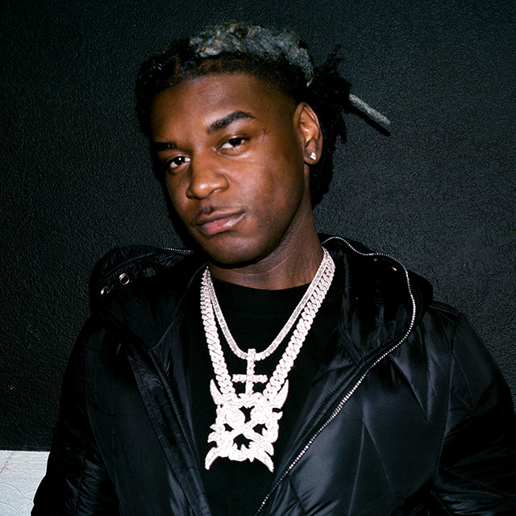

Ken Carson
Kenyatta Lee Frazier Jr. (born April 11, 2000), known professionally as Ken Carson, is an American rapper and record producer. He signed with Playboi Carti's record label Opium, an imprint of Interscope Records in 2019 to release his debut studio album, Project X (2021). His second album, X (2022) saw continued unfavorable reception, but became his first entry on the Billboard 200. His third studio album, A Great Chaos (2023) reached number 11 on the chart and saw a critical incline.
Carson is closely affiliated with Opium labelmate, frequent collaborator, and fellow Georgia native Destroy Lonely.